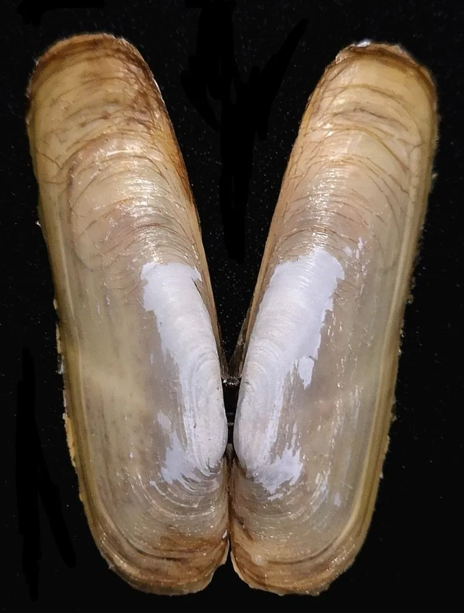

软体动物 · 动物界
缢蛏 Sinonovacula constricta

壳形细长如竹筒、两端开口的常见食用贝类，生活在潮间带泥滩中，用两根水管呼吸和滤食，是中国东南沿海重要养殖品种。
- 分类
- 门软体动物门纲双壳纲目帘蛤目科竹蛏科属缢蛏属
- 栖息环境
- 潮间带中下区的泥滩和泥沙底质，钻入泥中 20–30 cm 生活
- 地理分布
- 中国沿海以及日本、朝鲜半岛，浙江、福建沿海为主要养殖区
- 保护级别
- 暂无评估；中国未列入国家重点保护野生动物名录（重要养殖贝类）
物种志
缢蛏的贝壳细长，呈圆柱形，两端开口，壳质薄而脆。壳面黄绿或灰白色，有明显的生长纹，壳的前端有一条缢痕，因此得名“缢蛏”。壳长一般 5–8 cm，壳内面白色。
缢蛏分布于中国沿海以及日本、朝鲜半岛，栖息于潮间带中下区的泥滩和泥沙底质。它靠足部挖掘钻入泥中，深度可达 20–30 cm，退潮时在滩面上留下两个小孔，那是它伸出水管的通道。缢蛏是滤食性动物，靠水管吸入海水，过滤其中的浮游生物和有机碎屑。繁殖期在春末夏初，雌雄异体，体外受精，幼体浮游后附着变态。缢蛏是浙江、福建等地重要的养殖贝类，“蛏子”肉质鲜嫩，可爆炒、煮汤或盐焗，是东南沿海常见的家常海鲜。目前它没有IUCN 的正式评估，中国未将其列入国家重点保护野生动物名录。
形态与习性
- 食性滤食浮游生物和有机碎屑，靠水管吸水
- 壳长一般 5–8 cm
- 栖息深度钻入潮间带泥滩中 20–30 cm
- 繁殖春末夏初繁殖，雌雄异体，体外受精
- 养殖浙江、福建沿海重要的养殖贝类
- 习性退潮时滩面留下两个水管孔，受惊时缩回水管
趣味知识
- 缢蛏的壳细长像竹筒，两端都开着口。
- 它钻在泥滩里，退潮时滩面上会留下两个小孔，那是它的水管孔。
- 缢蛏是浙江、福建沿海重要的养殖贝类，肉质鲜嫩。